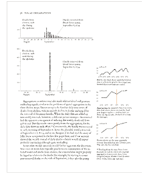

Glasseye 11. See the github repository for the source code. is something I’m developing to present the results of statistical analysis in an attractive and hopefully interesting way.
Glasseye brings together three great things that I use a lot:
The idea is to be able to write up work in markdown22. Markdown
is a lightweight markup language with a simple easy-to-use syntax. Text
written in markdown can be converted into HTML as well as a many other
formats and have the results transformed into something like
a Tufte layout33. The Tufte layout makes extenive use of a wide
margin to display notes, images and charts. 
Here’s an example: a d3 force directed graph, which can be easily added in to a glasseye document using html like tags.
In case it’s not obvious this web page was written using glasseye44. You can view the markdown here, that it is it was written in markdown with a few extra html-like tags thrown in.
First there’s the <sidenote> tag. Anything
enclosed in these tags will generate a numbered side note in the wide
margin as close as possible to the note number in the main text. For
example, I’ve used one here.55. I’m a side note! Use me for
commentary, links, bits of maths, anything that’s peripheral to the main
discussion..
You can easily add images to the side notes and margin notes just by
including the usual markdown syntax for inserting an image66. The
syntax is  within the
tags.
Then there is a <marginnote> tag which is the
nearly the same as the side note, only there’s no number linking it to a
particular part in the main text. You’ll see to the right an example of
a margin note containing a d3 donut chart.
An example of margin note containing a donut plot. Because a tooltip is available we can create a less cluttered chart with labels for the smaller segments demoted to the tooltip.Including d3 charts in a glasseye document is very easy. You just need to surround the name of the file containing the data with tags specfying the type of chart. For example this chart was generated using
I’m using pandoc to convert the markdown to html which means we can take advantage of its ability to transform latex into mathjax. For example the formula below was written in latex.
\[E[L]= \frac{1}{B(\alpha)}\int \cdots \int_\mathbf{D}\ \sum_{j=1}^N \theta_{j}^2 \ \prod_{j=1}^N \theta_j^{\alpha_j-1} \ d\theta_1 \!\cdots d\theta_N \]
However sometimes the mathematical details are not central to a discussion, in which case it’s nice to put them in a side note which can be easily done using the sidenote or marginnote tags77. Here’s an example of some maths that has been placed in a side note \[ f(\theta*1,\dots, \theta_N; \alpha_1,\dots, \alpha_N) = \frac{1}{\mathrm{B}(\alpha)} \prod*{i=1}^N \theta*i^{\alpha_i - 1} \] Where the normalising constant is: \[ \mathrm{B}(\alpha) = \frac{\prod*{i=1}^N \Gamma(\alpha*i)}{\Gamma\bigl(\sum*{i=1}^N \alpha_i\bigr)},\qquad\alpha=(\alpha_1,\dots,\alpha_N)\]
I’ve tried to create charts that are simple and uncluttered with the tooltip taking over some of the work. This is so that they can fit in the margin nicely. I’ve been thinking about making them as intellegent as possible so that choices are made for you about formatting (for example label positioning). That may prove annoying though so we’ll see how it goes. It’s easy to include any of the d3 charts into either the main body of the text or into the margin.
Inserting a plot is again just a matter of using some custom tags.
For example to generate a line plot just surround a string containing
the path and filename of a csv file with a
<linechart> tag. You can optionally supply axis
labels.
88. An example of a line plot. Note the tooltip means we don’t need y axis tick labels. This plot was created by inserting the following line into the markdown.
Alternatively you can write the data in json into the markdown. For
example we can create an interactive treemap99. An example of an
intreactive treemap. Click on the rectangles to zoom in
by inserting the following into the markdown1010. See the section below for the full json
<treemap data='
{
"name": "All",
"children": [
{"name": "Bakery",
"size": 34},
{"name": "Tinned Goods",
"children": [
{"name": "Beans",
"size": 34},
{"name": "Soups",
"size": 56},
{"name": "Puddings",
"children": [
{"name": "Fruit",
"children": [
{"name": "Tangerines",
"size": 15},
{"name": "Pears",
"size": 17}
]
},
{"name": "Apricots",
"size": 89}
...
'></treemap>Javascript charts also allow us to animate content which can be
useful. I created a chart type <sim_plot> for a
project using agent based simulation. It animates a time line which
helps bring home the fact that the data is computer generated
Glasseye is built using pandoc and the python beautifulsoup library. Pandoc is used to generate the html from the markdown and beautifulsoup is used to manipulate the extra tags and make the appropriate substitutions, including adding in the d3 charts.
I’ve now added glasseye to pip so installation is fairly straightforward
pip install glasseye
1111. Assumes you already have the pip package. If you don’t just
run easy_install pipJust create your markdown file using a text editor and then from the commandline run1212. Don’t forget to include the path of the markdown file if you are not actually in its directory
glasseye myMarkdownFile.mdThe html will then be created in the current directory along with the supporting css and javascript.
You can test it out using the demo that comes with the package.
You’ll find the demo files in
path_to_your_packages/glasseye/demo. Copy them to a new
directory and run
glasseye markdownExample.mdIn no particular order here are the d3 charts I have added so far.1313. You might be wondering why I’ve added these charts when there are so many basic charts that I haven’t yet included. The answer is quite selfish. I’m just adding them as I need them. More will follow!. Some of them can be generated from csv files some from inline json, some from both. The aim is for all to be generated from both.
You’ll just need to put the json describing your sets between
<venn> tags as in this example.
<venn data='
[
{"name": "Badgers", "size": 300},
{"name": "Peanuts", "size": 42},
{"name": "Mushrooms", "size": 130},
{"name": "Badgers','Mushrooms", "size": 67},
{"name": "Peanuts','Mushrooms", "size": 2},
{"name": "Peanuts','Badgers", "size": 0}
]
'></venn>This ia a fairly standard layout for a hierarchy, adapated from Mike Bostocks original design.
Like all of the charts it can appear in the main body or in the
margin.1414. The same tree layout as it appears in the margin.
To create a treelayout include some nested json within the tree tags.
### Sankey chart
A sankey chart shows flow and volume between objects. It can be
thought of as a sort of bi-directional dendogram.
<skey data='
{
"nodes": [
{ "name": "Product 1" },
{ "name": "Product 2" },
{ "name": "Product 3" },
{ "name": "Product 4" },
{ "name": "Product 5" }
],
"links": [
{ "source": 0, "target": 1, "value": 10 },
{ "source": 0, "target": 2, "value": 5 },
{ "source": 1, "target": 3, "value": 6 },
{ "source": 2, "target": 3, "value": 2 },
{ "source": 3, "target": 4, "value": 8 }
]
}
'></skey>
### A simple bar chart
A simple bar chart can be created using the barchart tags.<sidenote>
A bar chart as it appears in the margin.
<barchart data='
[
{"label":"Apples", "value":"33"},
{"label":"Pears", "value":"12"},
{"label":"Oranges", "value":"9"}
]
'></barchart>
</sidenote>
### A force directed layout
Another fairly standard chart in the d3 world, you can create a force directed layout of a graph using the force tags and some json.<sidenote>
A force directed layout of a graph.
<force data='
{
"nodes": [
{"name": "squishedfish.com", "group": 1},
{"name": "reddog.co.uk", "group": 1},
{"name": "blankcat.com", "group": 2},
{"name": "scrimpledfeet.com", "group": 2},
{"name": "sickbag.com", "group": 2},
{"name": "bluehouse.co.uk", "group": 3},
{"name": "webbedcat.com", "group": 3},
{"name": "flatrhino.co.uk","group": 1},
{"name": "greycamel.com", "group": 3}
],
"links": [
{ "source": 0, "target": 1, "value": 20 },
{ "source": 0, "target": 2, "value": 30 },
{ "source": 1, "target": 4, "value": 22 },
{ "source": 6, "target": 2, "value": 5 },
{ "source": 1, "target": 7, "value": 5 },
{ "source": 3, "target": 8, "value": 15 },
{ "source": 5, "target": 8, "value": 15 }
]
}
'></force>
</sidenote>
### A gantt chart
I find a simple version of a Gantt chart useful when creating plans
and proposals. It gives a rough idea of the time scales involved. The
syntax is as follows:
This will give you the following
<gantt data='
[{"task": "Analysis phase", "start": "2015-03-01", "end": "2015-03-12"},
{"task": "Build phase", "start": "2015-03-13", "end": "2015-03-24"},
{"task": "Testing phase", "start": "2015-03-25", "end": "2015-04-15"}]
'></gantt>
### A pie chart
As seen above, you can create a donut plot from a csv file (you just need columns with headings `label` and `value`). Alternatively you can use inline json as in this example.<sidenote>
A pie created from inline json.
<piechart data='
[
{ "label": "Category A", "value": 30 },
{ "label": "Category B", "value": 70 },
{ "label": "Category C", "value": 45 },
{ "label": "Category D", "value": 55 },
{ "label": "Category E", "value": 20 }
]
'></piechart>
</sidenote>
```
As seen above, you can create a donut plot from a csv file (you just
need columns with headings label and value).
Alternatively you can use inline json as in this example.1515. A
donut created from inline json. <piechart data=’ [ { “label”:
“Category A”, “value”: 30 }, { “label”: “Category B”, “value”: 70 }, {
“label”: “Category C”, “value”: 45 }, { “label”: “Category D”, “value”:
55 }, { “label”: “Category E”, “value”: 20 }] ‘, donut=’true’>
<piechart data='
[
{ "label": "Category A", "value": 30 },
{ "label": "Category B", "value": 70 },
{ "label": "Category C", "value": 45 },
{ "label": "Category D", "value": 55 },
{ "label": "Category E", "value": 20 }
]
', donut='true'>
</piechartAs seen above, you can create a donut plot from a csv file (you just
need columns with headings label and value).
Alternatively you can use inline json as in this example.
1616.
<heatmap>
[
{ "x": 1, "y": 1, "value": 10 },
{ "x": 2, "y": 1, "value": 20 },
{ "x": 3, "y": 1, "value": 30 },
{ "x": 1, "y": 2, "value": 40 },
{ "x": 2, "y": 2, "value": 50 },
{ "x": 3, "y": 2, "value": 60 },
{ "x": 1, "y": 3, "value": 70 },
{ "x": 2, "y": 3, "value": 80 },
{ "x": 3, "y": 3, "value": 90 },
]
</heatmap>
Similarly the line chart can be either created from a csv file (as long as it has columns with heading x and y) or from in line json. Here is an example.
<linechart>
[
{ "x": 1, "y": 10 },
{ "x": 2, "y": 20 },
{ "x": 3, "y": 15 },
{ "x": 4, "y": 25 },
{ "x": 5, "y": 30 },
{ "x": 6, "y": 35 }
]
</linechart>Using sample data from line chart above
At present the treemap can only be generated from inline json. Here’s the full json.
<treemap>
{
"name": "All",
"children": [
{"name": "Bakery",
"size": 34},
{"name": "Tinned Goods",
"children": [
{"name": "Beans",
"size": 34},
{"name": "Soups",
"size": 56},
{"name": "Puddings",
"children": [
{"name": "Fruit",
"children": [
{"name": "Tangerines",
"size": 15},
{"name": "Pears",
"size": 17}
]
},
{"name": "Apricots",
"size": 89}
] }] },
{ "name": "Meat and Fish",
"children": [
{ "name": "Meat",
"children": [
{ "name": "Poultry",
"size": 15 },
{ "name": "Beef",
"size": 17 }
]},
{ "name": "Fish",
"size": 89 }
]
}
]
}
</treemap>Below is an axample of how to do tags for dotplot and the output chart
<dotplot>
[85, 87, 87, 90, 90, 90, 92, 95]
</dotplot>Below is an axample of how to do tags for Scatterplot and the output chart
<scatterplot>
[
{ "x": 1, "y": 50 },
{ "x": 2, "y": 55 },
{ "x": 3, "y": 65 },
{ "x": 4, "y": 70 },
{ "x": 5, "y": 72 },
{ "x": 6, "y": 78 },
{ "x": 7, "y": 80 },
{ "x": 8, "y": 85 },
{ "x": 9, "y": 88 },
{ "x": 10, "y": 95 }
]
</scatterplot>Below is an axample of how to do tags for boxplot and the output chart
<boxplot>
[
{ "category": "A", "values": [10, 15, 20, 25, 30, 35] },
{ "category": "B", "values": [5, 10, 15, 20, 25, 30] },
{ "category": "C", "values": [20, 25, 30, 35, 40, 45] }
]
</boxplot>